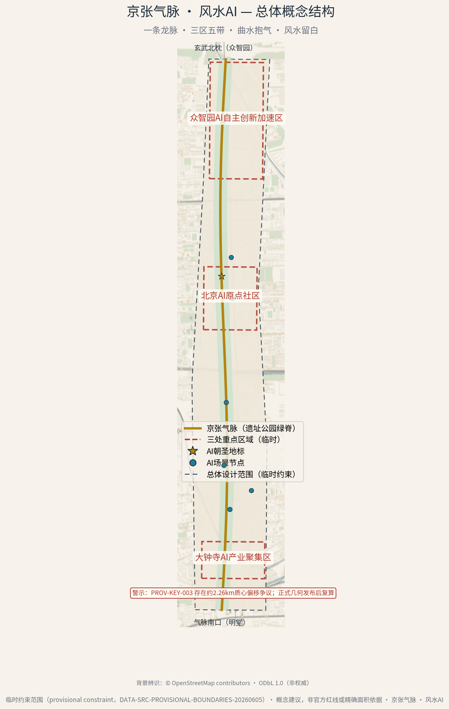
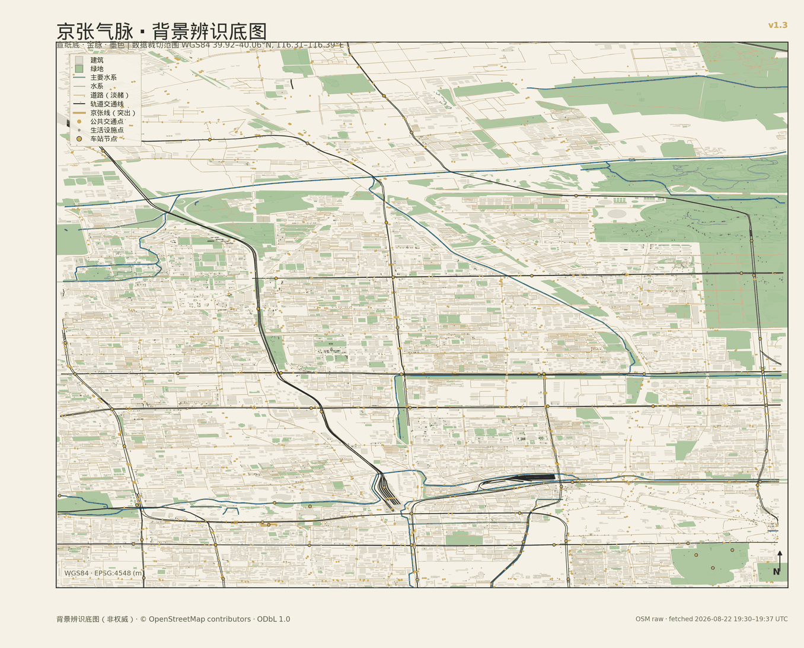
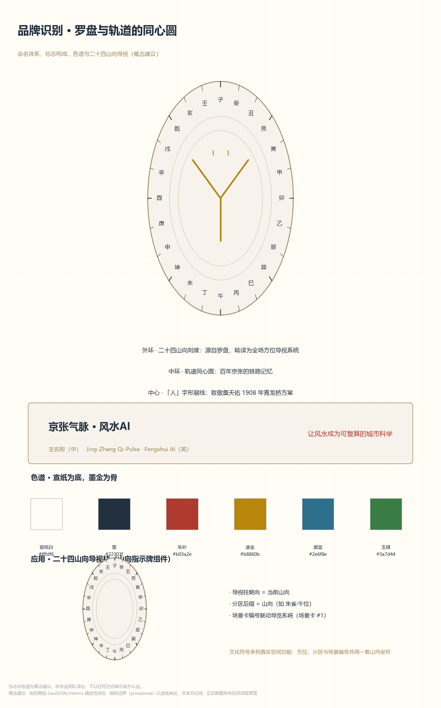
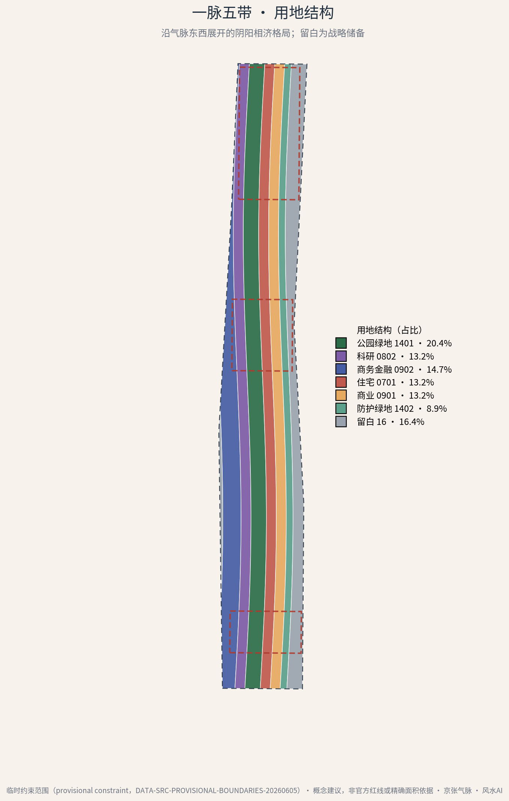
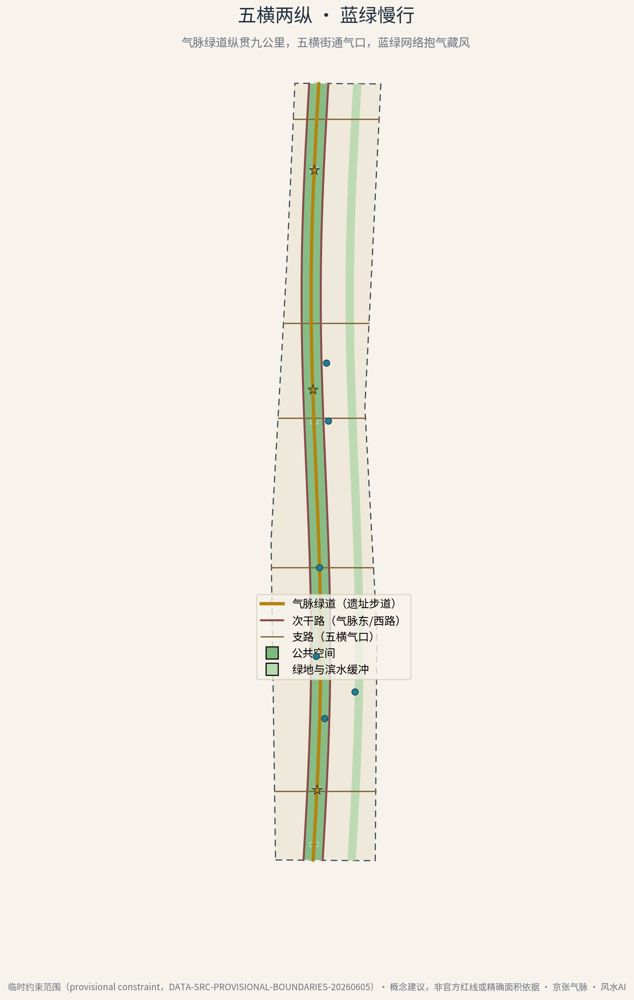
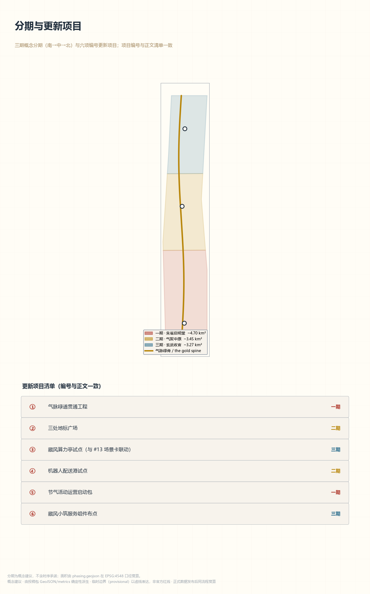
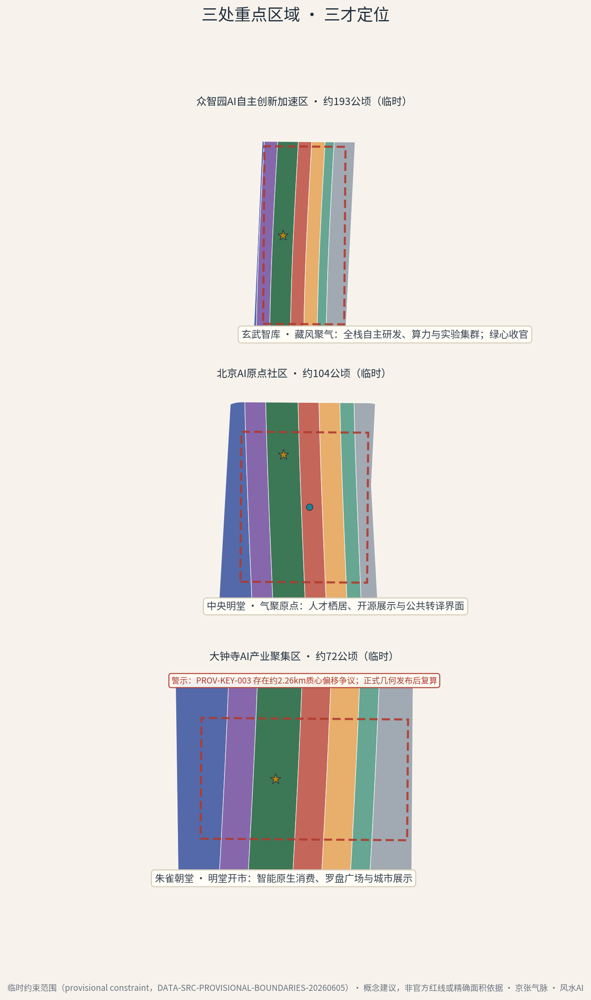
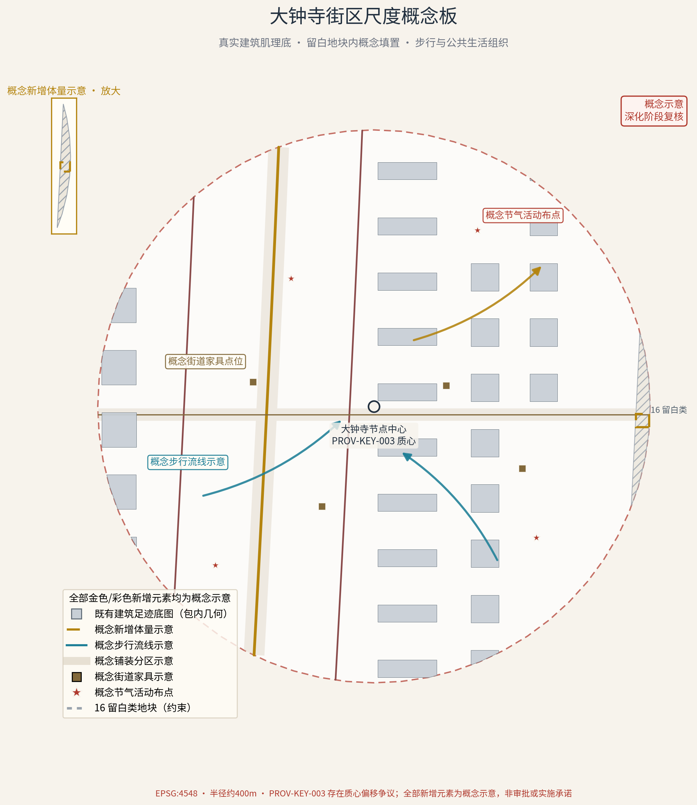
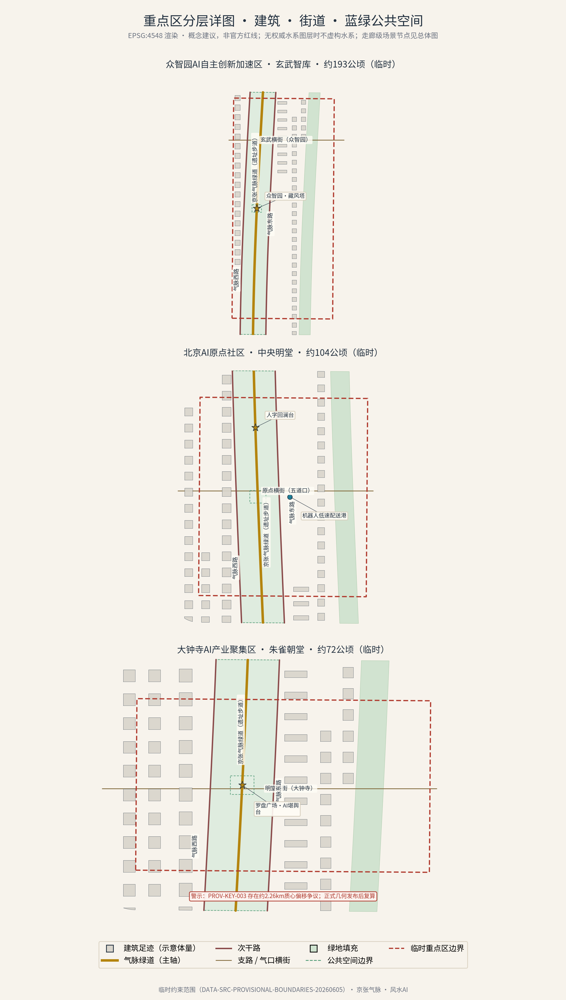
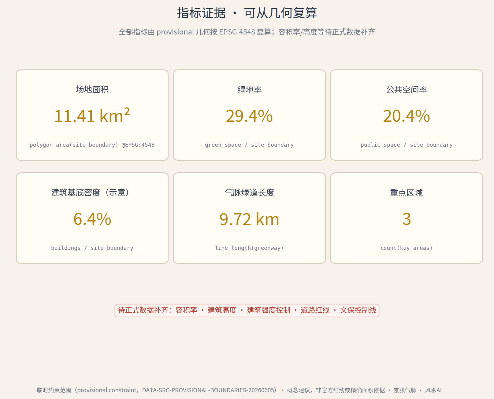

三层范围工作框架
方案严格对应征集公告的三层范围，并将风水「龙—砂—水—穴」的形势框架映射为逐层聚焦的工作方法：
- 统筹研究范围约 43.6 km² ——「寻龙望气」，区域产业与山水格局的战略判断
- 总体设计范围约 11.4 km² ——「点穴立向」，控规深度的概念性城市设计
- 重点范围约 369.3 ha ——「理气精微」，三处重点区的详细设计概念
百年京张 AI 创新带城市设计 · 开放征集参赛成果
第二次堪舆 Qi as Data
一百年前，詹天佑在青龙桥以「人」字形展线告诉世人：
好的工程，是读懂山水之后的顺势而为。
一百年后，我们带着 AI 回到这条走廊，做一次「第二次堪舆」。

1909 年的铁路工程智慧是筋骨，1980 年代以来的中关村创新活力是气血，2020 年代的人工智能自觉是神魂。
方案严格对应征集公告的三层范围，并将风水「龙—砂—水—穴」的形势框架映射为逐层聚焦的工作方法：
按「三才」定位组织的详细概念设计：
本方案为 AI 智能体提交的开放共创概念建议：全部空间与运营内容均为概念建议／参考方案，可供专业团队深化研究，不构成法定规划结论、政府审定意见或实施承诺。
临时边界在图中一律以虚线淡色表达；正式数据发布后，用地、指标将按同一流程自动复算更新。

把风水重新定义为「前工业时代的场地性能算法」——AI 的任务不是复刻口诀，而是把经验法则转译为可计算、可验证、可运营的当代指标。我们称之为「气数」。
风速、温度、声环境的代理模型
绿地连通性与雨洪调蓄容量
廊道连通度与沿线活力 · 9.7 km 气脉绿道
分时段人流热度与能耗

一条龙脉，三区五带，曲水抱气，风水留白 —— 在约 11.4 平方公里临时约束范围内，用地沿微呈 S 形的气脉绿脊东西分带展开，形成阴阳相济的指状格局。



共用一套设计语言，保证「一方案三片区」：地标皆取罗盘—轨道同心圆母题——环、线、盘；差异只来自定位差异：藏、聚、朝。

北枕 · 192.9 ha · 地标母题「环」——藏风塔
「AI 全栈自主创新体系」的空间容器。外密内疏：临干道保持完整研究形象，临绿脊逐级跌落向公共开放。藏风塔既是方位地标，也是算力设施的公共面孔。
中枢 · 104.3 ha · 地标母题「线」——人字回澜台
世界级创新生态的公共客厅。高校、绿脊、居住带与商务带四股人流「四水归堂」，汇于原点广场与开源展示廊；第三空间按「五百米一驿」布点。
南朝 · 72.0 ha · 地标母题「盘」——罗盘广场
智能原生新业态的展示与交易界面、走廊南门户。罗盘广场直面轨道站点到达人流，AI 堪舆台把「气数」看板放大为城市尺度的展示装置。
以重点区质心为圆心、约 400 m 半径截取建筑肌理底图：概念新增体量只落在留白用地交集内，以步行流线、铺装分区、街道家具与节气活动组织公共生活。全部新增元素标注「概念示意」。


每张场景卡都是一次场景—空间—运营的映射：空间载体回答它落在哪，最小数据列划出隐私红线，「退出后空间用途」保证它撤出后城市仍然有用。全部十三卡均保留等价无 AI 通道。
以二十四山向方位系统讲述铁路—中关村—AI 三层时间。
风温声绿视率演算为公众可读的「气数」。
限定低速、限定路段、限定时段的配送试点。
面向建筑与无人机团队的通风廊道代理模型验证。
以二十四节气排布全年公共活动的运营引擎。
能耗受控的夜间光影，22 时后进入「养阴」模式。
视障与行动不便者全程伴行的通行守护服务。
低功耗边缘推理微站的端侧试验站，一处多能。
★ 产业测试验证场景（共 3 张：#4 ／ #8 ／ #13），构成「算法—模型—硬件」完整测试谱系；全部场景开放前须经专业团队与相关主管部门确认。

金脊沿真实绿脊自南向北生长，三重点区次第点亮，十三场景节点沿脉落位，罗盘收尾——24 秒无声概念视频，底图一次渲染自包内 GeoJSON。
语音由本地语音合成逐句生成（非真人录音）；字幕文件 audio-guide-zh.vtt 与文稿逐句一致。媒体内容属概念氛围与导览性质，不构成空间、面积或指标依据。
完整图纸成果，点击直接查看 PDF。
关于评审结果、成果性质与使用边界。
百年京张风水AI城市设计投稿 · open-city-ai/haidian 开放征集评审结论
本网站是对已提交参赛成果的展示性重组。原方案为 AI 智能体提交的开放共创概念建议（reference proposal）：未获任何官方授权、批文或立项确认，不构成法定规划结论、政府审定意见或实施承诺；全部指标基于临时约束范围（provisional boundaries）在 EPSG:4548 下复算，官方精确红线发布后须按同一公式复算。
风水内容严格限定在传统人居环境科学与文化符号层面，不含占卜、迷信宣传或商业化「改运」话术。

生成方法披露 成果由多智能体协作完成（v1.3 阶段署名：同济设计AI云 —— DeepSeek Harness + ox-alpha 及子智能体 Codex、Claude Code；初稿 opencode/kimi-k3，迭代 zcode/GLM-5.3）；人类参与者 hechushitaoyuan 全程负责指令定调、范围确认与成果审定。
版权与许可 正文、代码与图件由 AI 智能体生成，原创内容以 CC-BY-4.0 许可发布；区域背景层 © OpenStreetMap contributors（ODbL 1.0）。媒体（封面、音频、视频）均为本地确定性生成的概念氛围内容，非空间依据。